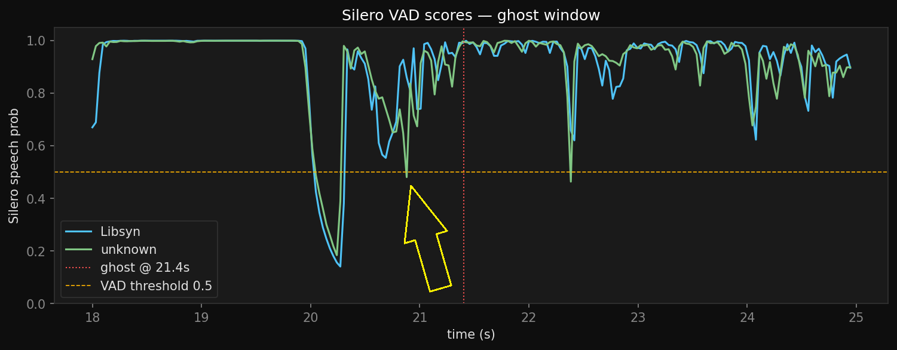
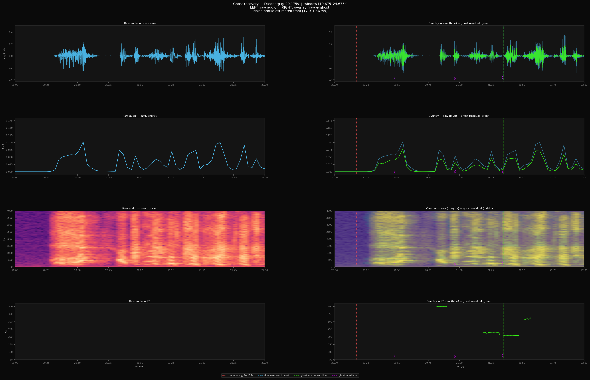

03 / Forensics
Ghosts in the Audio
Modern transcription pipelines produce transcripts that look clean, structured, and complete. But they are not infallible — error can pass silently onto the transcript and remain there unless detected manually.
1. Ghost Audio step 02 — WhisperX
Speech is present in the raw audio but missing from the transcript. The words existed. The pipeline dropped them. Training data never sees them.
2. Misclassification step 03 — NeMo
Speech is transcribed correctly but assigned to the wrong speaker. The words are there. The voice is wrong. Training data learns the wrong persona.
Both errors are common in short-form conversational audio — speaker turns lasting under five seconds, which make up 43% of All-In Podcast content. Community convention is to drop all segments under that threshold, mostly because it's worse to train a model on bad data because errors compound downstream. But also because forensic work to review this content is energy and time intensive.
Two Source Files
The ghost segment appeared in the older transcript but not the newer one — despite the newer file being higher bitrate and sample rate. The difference starts before WhisperX runs. It starts with the file.
Higher bitrate, higher sample rate — and less content recovered. The Libsyn file's density is what buries the ghost. The lower quality file's dynamics are what surface it.
WhisperX ASR — Ghost Audio
{
"segments": [
{
"start": 21.11,
"end": 24.251,
"text": "Oh, my God.",
"words": [
{
"word": "Oh,",
"start": 21.11,
"end": 21.27,
"score": 0.692
},
{
"word": "my",
"start": 21.33,
"end": 23.511,
"score": 0.784
},
{
"word": "God.",
"start": 23.571,
"end": 24.251,
"score": 0.628
}
],
"speaker_nemo": "gerstner",
"speaker_canonical": "friedberg",
"confidence": 0.247,
"ghost_window": true,
"classification_error": true
},
{
"start": 25.271,
"end": 26.051,
"text": "He's not even here.",
"words": [
{
"word": "He's",
"start": 25.271,
"end": 25.491,
"score": 0.603
},
{
"word": "not",
"start": 25.511,
"end": 25.651,
"score": 0.939
},
{
"word": "even",
"start": 25.711,
"end": 25.871,
"score": 0.828
},
{
"word": "here.",
"start": 25.911,
"end": 26.051,
"score": 0.727
}
],
"speaker_nemo": "friedberg",
"speaker_canonical": "friedberg",
"confidence": 0.681
},
{
"start": 27.4,
"end": 28.5,
"text": "Oh, my God.",
"words": [],
"speaker_nemo": null,
"speaker_canonical": "gerstner",
"confidence": null,
"barely_audible": true,
"discovered_via": "video_analysis"
},
{
"start": 51.0,
"end": 52.8,
"text": "Where is JCal?",
"words": [
{
"word": "Where",
"start": 51.0,
"end": 51.3,
"score": 0.892
},
{
"word": "is",
"start": 51.32,
"end": 51.48,
"score": 0.918
},
{
"word": "JCal?",
"start": 51.52,
"end": 52.8,
"score": 0.863
}
],
"speaker_nemo": "gerstner",
"speaker_canonical": "gerstner",
"confidence": 0.891,
"first_clear_gerstner_segment": true
}
],
"metadata": {
"episode": "e136",
"total_segments": 1301,
"short_segments_count": 559,
"short_segments_pct": 43,
"ghost_windows": 2,
"classification_errors": 27,
"avg_word_confidence": 0.612,
"pipeline_version": "whisperx_v3_nemo_titanet"
}
}
no_speech_threshold = 0.3, log_prob_threshold = -1.0, and batch_size = 8 surfaced Friedberg's segment in the Libsyn transcript. The result did not reproduce on subsequent runs. The parameters were logged and are known — the discrepancy remains unexplained.
Forensic Signal Analysis
Chamath Palihapitiya is the dominant voice in this window — and that matters. WhisperX is built on a transformer architecture that distributes attention across the audio it receives. When a window contains a loud, dense primary speaker alongside a brief, quieter interjection, the model allocates most of its attention to the dominant signal. The quieter voice doesn't disappear — it competes, and loses. This is why reducing batch size was a reasonable hypothesis: smaller windows mean less competition per chunk. If Friedberg's reaction lands in its own window with no Chamath to compete with, the model has no choice but to attend to it.
Chamath's four-part riff ends with "And the fattest, that's the dumbest" at 19.9s. Friedberg's reaction, "Oh my God.", follows at 20.49s.
The VAD score is a simple measure: how confident is the model that someone is speaking right now. High score means speech. Low score means silence or near-silence.
The chart below shows both files across the same window. Around 20–21s, both files drop — a brief moment after Chamath finishes. In the unknown file (green), that drop crosses below the 0.5 threshold. Silero reads it as a pause, cuts a segment boundary, and "Oh, my God" lands at the top of a fresh segment with clean context. In the Libsyn file (blue), the VAD score recovers faster — the score never crosses the threshold. No boundary is cut. The ghost arrives inside a long, dense chunk of speech and Whisper deprioritizes it.

Failures and Resolution
Two-Pass Recovery
The VAD analysis explained why the Libsyn file drops Friedberg's ghost — the score never crossed the non-speech threshold, so no segment boundary was cut, and the ghost arrived inside a long dense chunk where Chamath's voice dominated the attention budget. Knowing the attention architecture was in play, the hypothesis followed naturally: a two-pass system. Pass one transcribes the dominant acoustics as normal. Pass two targets the residual — the audio that remains after the dominant voice is accounted for. Before building it, spectral subtraction was used to confirm the residual signal actually exists. Using Chamath's audio in the preceding window as a noise profile and subtracting it from the ghost window, the remainder shows clear acoustic activity at exactly the timestamps where Friedberg's words appear in the earlier transcript. The signal is there. The pipeline is dropping something real.

The two-pass pipeline is implemented in whx_miscreantghostgnome_v6.py. Pass 1 runs the baseline WhisperX transcription across the full audio. Pass 2 uses Silero VAD to scan each baseline segment for internal dips — moments where speech probability drops, indicating a potential boundary between speakers. At each candidate boundary, a narrow window is re-transcribed with relaxed thresholds, isolating content that the first pass missed. Any new words not present in the baseline are flagged as recovered ghosts.
#!/usr/bin/env python3 # whx_miscreantghostgnome.py # Pipeline is IDENTICAL to v5.3 # After all passes complete, whisperx.align() runs once on the # merged segment list (baseline + recovered ghosts) and writes # word-level timestamps to the final JSON. # ---- Pass 1 ---- MODEL_NAME = "large-v3" COMPUTE_TYPE = "float16" BATCH_SIZE = 8 VAD_ONSET, VAD_OFFSET = 0.500, 0.363 # ---- Pass 2: Silero VAD scan ---- MIN_SEGMENT_DURATION = 8.0 SILERO_CHUNK = 512 VAD_DIP_THRESHOLD = 0.45 MIN_DIP_CHUNKS = 3 MAX_DIP_CHUNKS = 50 MIN_BOUNDARY_SPACING_S = 2.0 # ---- Pass 3: Window transcription ---- WINDOW_PRE = 0.5 WINDOW_POST = 4.5 WINDOW_VAD_ONSET = 0.150 WINDOW_VAD_OFFSET = 0.100 WINDOW_NO_SPEECH_THRESHOLD = 0.1 WINDOW_LOGPROB_THRESHOLD = -2.0
UMAP Embeddings Manifold
Speaker classification introduces a second, independent failure mode. Early in an episode, NeMo has minimal information about each speaker's voice. When Friedberg speaks at 21 seconds, the model has not yet heard a clear, audible example of Brad Gerstner. The system assigned Friedberg's voice to the closest available cluster — which at the time was Brad Gerstner. Cosine similarity confirmed the segment is actually closest to Friedberg's voice.
As the episode advances, speaker embeddings mature and cluster representation shifts — however, the earlier mislabeling is never revisited. The transcript appears complete. The pipeline exits cleanly. The misattribution remains hidden.
Implications for Training Data
Every misattributed line becomes training data. Speaker attribution errors rarely surface as failures — the transcript appears correct and the pipeline produces no warnings. Incorrect labels quietly propagate into downstream datasets.
Two-pass diarization addresses part of the problem, and human-in-the-loop labeling can catch residual errors. But the deeper issue is architectural: single-pass diarization on long-form audio is biased against early segments.
The first minute of a three-hour episode is labeled with dramatically less information than the final hour. Across hundreds of episodes, that asymmetry compounds.
Ghost Audio — Crimson Tide (film) ▼
In the 1995 film Crimson Tide, the submarine USS Alabama receives an Emergency Action Message (EAM) ordering the launch of nuclear missiles. A second EAM follows but cuts off mid-transmission when the radio fails.
The Captain (Gene Hackman) and First Officer (Denzel Washington) interpret the situation differently. The Captain assumes the prior launch order still stands; the First Officer believes the second EAM may contain a cancellation. The crew splits into opposing factions along those lines.
Translated to the film: the Alabama's radio didn't fail. The second EAM was received. But in the noise of the control room, no one noticed it arrive — and there is no clean way to play it back.
Misclassification — Boeing MCAS (2018) ▼
The Boeing 737 MAX introduced a flight-control system called the Maneuvering Characteristics Augmentation System (MCAS) to counter a pitch-up tendency created by rushed design changes made to the airplane during development.
MCAS relied on input from a single angle-of-attack (AoA) sensor, even though two AoA sensors were installed on the aircraft. When that single sensor produced a faulty reading, MCAS took control of the plane and put it into a nose-down position. Pilots fought to regain control, but roughly every ten seconds MCAS re-engaged based on the same bad sensor input. Two crashes followed. 346 people died.
The classifier was not designed to cross-check against a second signal or flag low confidence. Early in an episode, NeMo has heard very little of each speaker. When Friedberg speaks at 21 seconds, the model has not yet encountered a clear, unambiguous example of Brad Gerstner — so it assigns Friedberg's voice to the closest available cluster, which at that moment is Gerstner. The misattribution is never revisited. Those errors propagate silently downstream, contaminating training data.